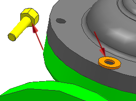

添加一个六角螺栓
-
将渲染样式更改为带边着色
 。
。 -
添加 des02_hex_bolt，使用 Model 引用集和通过约束定位选项。
-
在 des02_hex_bolt 端部的底面与 des02_washer 的顶面之间，应用一个接触对齐→接触约束。

-
点击应用。
-
在 des02_hex_bolt 的圆柱面轴与 des02_valve_yoke 上孔的中心线间，应用一个接触对齐→自动判断中心/轴约束。
您必须选择 des02_valve_yoke 上孔的中心线，以保持特征实例关系。

-
点击确定。